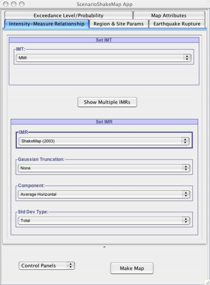
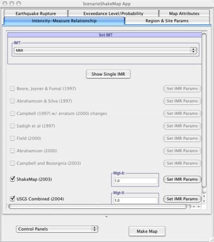
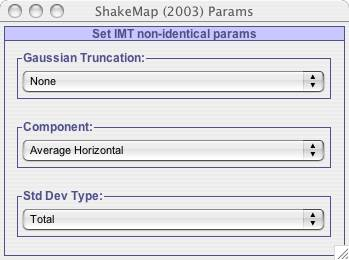

As shown in Fig - 1, this is the first panel visible to the user when application is first launched. Based on what user selects as the choice for Intensity Measure Type (IMT), only those Attenuation Relationships that support this selected IMT are listed for user to make his selection, as shown in Fig –2.
 |
| Fig - 1: ScenarioShakeMap application when it is launched |
User has option of either generating ScenarioShakeMaps using single attenuation relationship or multiple attenuation relationships. User can select multiple attenuation relationships by clicking on button Show Multiple IMRs , as shown in Fig – 3. If multiple attenuation relationships are being used for calculation, then final Scenario ShakeMap data is the weighted average of the selected attenuation relationships. User can set parameters for each Attenuation Relationship individually by clicking on Set IMR Params . As shown in Fig – 3 each selected AttenuationRelationship is associated with some weight. In this application computation for Scenario Shakemap data is done using the weighted average, in which case once user has provided weight for each selected AttenuationRelationships, our application computes relative weight of each selected Attenuation model out of 1.0, using which we compute the ScenarioShakeMap data.
The button in the middle of the panel is a toggle between selection of single attenuation relationship and multiple attenuation relationships. It allows the user to toggle between the 2 modes of attenuation relationship selection.
If user has chosen to work with multiple attenuation relationships models by clicking on the button Show Multiple IMRs, he/she can change the selected Attenuation Relationships models adjustable parameters by clicking on the Show IMR Params, as shown in Fig – 3(a). A pop up window will open up that allows user to adjust parameters for the attenuation relationship for which this button was clicked. So in case of Fig-3 , user can adjust parameters for both ShakeMap-2003 and USGS Combined(2004) by clicking on their corresponding Set IMR Params button.
|  |
|
Fig - 2: Changing the IMT to MMI will allow user to select from only 2 choices of attenuation relationships (IMR Label) : ShakeMap (2003) and USGS Combined (2004). |
|  |
Fig - 3: Once IMT has been selected to MMI and Show Multiple IMRs button is clicked, it shows only 2 Attenuation Relationships to the user to choose from. User has choice of either selecting one or both attenuations for scenario shakemap. See now the button on this panel says "Show Single IMR" , which if clicked will revert back to the single attenuation selection. If user decides to work with multiple attenuation relationships then he/she can set parameters for each selected attenuation relationship by clicking on Set IMR Params . |
|  |
|
Fig - 3(a): This figures shows the adjustable parameters for the ShakeMap – 2003 Attenuation Relationship. This window pops up when user clicks on the "Set IMR Params" for choice ShakeMap-2003 if he/she has chosen to work with multiple attenuation relationship models |